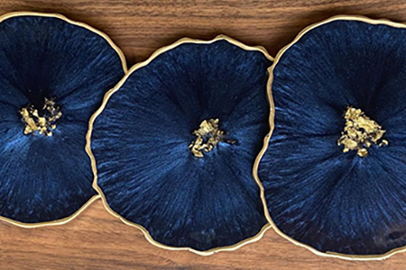

Knitting

We start the two stitches used in knitting: Knit and Purl. Then comes simple knitting patterns to apply the two stitches. Later we move more intricate stitches. Below are some beginner projects we will start with.
- Hats
- Scarves
- Mittens
Crocheting

We start with the types of stitches then move to patterns and other types of crocheting. Below are some the stitches to begin your learning process.
- Chain stitch
- Single crochet
- Double crochet
Resin
We have a wide verity of molds to choose from. Choose your colors and mix with the resin then pour in to the molds and add embellishments. Below are some the items you can create.
- Costers
- Cutting boards
- Earings
Sign up for a class today! Call (425) 422-1111